Pelajaran 1: Pengantar Database
Microsoft Access adalah program pembuatan dan pengelolaan basis data. Untuk memahami Access, Anda harus terlebih dahulu memahami database.
Dalam pelajaran ini, Anda akan belajar tentang database dan bagaimana mereka digunakan. Anda akan membiasakan diri dengan perbedaan antara manajemen data di Microsoft Access dan Microsoft Excel. Akhirnya, Anda akan melihat sisa tutorial Access.
Tonton video di bawah ini untuk mempelajari selengkapnya tentang database di Access.
Apa itu basis data?
Sebuah basis data adalah kumpulan data yang disimpan dalam sistem komputer. Basis data memungkinkan penggunanya untuk memasukkan, mengakses, dan menganalisis data mereka dengan cepat dan mudah. Mereka adalah alat yang sangat berguna sehingga Anda selalu melihatnya. Pernah menunggu saat resepsionis dokter memasukkan informasi pribadi Anda ke komputer, atau melihat karyawan toko menggunakan komputer untuk melihat apakah barang tersedia? Jika demikian, maka Anda telah melihat database beraksi.
Cara termudah untuk memahami database adalah dengan menganggapnya sebagai kumpulan daftar. Pikirkan tentang salah satu database yang kami sebutkan di atas: database informasi pasien di kantor dokter. Daftar apa yang terdapat dalam database seperti ini? Untuk mulai dengan, ada daftar nama pasien. Lalu ada daftar janji temu sebelumnya, daftar riwayat kesehatan setiap pasien, daftar informasi kontak, dan seterusnya.
Ini berlaku untuk semua database, dari yang paling sederhana hingga yang paling kompleks. Jika Anda suka memanggang, misalnya, Anda mungkin memutuskan untuk menyimpan database yang berisi jenis cookie yang Anda tahu cara membuatnya dan teman yang Anda beri cookie ini. Ini adalah salah satu database paling sederhana yang bisa dibayangkan. Ini berisi dua daftar: daftar teman Anda, dan daftar cookie.
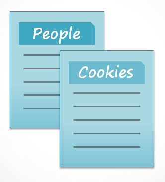
Namun, jika Anda seorang pembuat roti profesional, Anda akan memiliki lebih banyak daftar untuk dilacak: daftar pelanggan, produk yang dijual, harga, pesanan, dan sebagainya. Semakin banyak daftar yang Anda tambahkan, semakin kompleks databasenya.

Di Access, daftar sedikit lebih rumit daripada yang Anda tulis di atas kertas. Access menyimpan daftar datanya dalam tabel, yang memungkinkan Anda menyimpan informasi yang lebih detail. Pada tabel di bawah, daftar Orang dalam database pembuat roti amatir telah diperluas untuk menyertakan informasi relevan lainnya tentang teman pembuat roti.
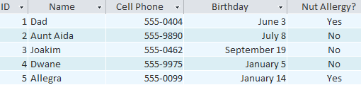
Jika Anda sudah familiar dengan program lain di Microsoft Office suite, ini mungkin mengingatkan Anda tentang Excel, yang memungkinkan Anda untuk mengatur data dengan cara yang sama. Bahkan, Anda bisa membuat tabel serupa di Excel.
Mengapa menggunakan basis data?
Jika database pada dasarnya adalah kumpulan daftar yang disimpan dalam tabel dan Anda dapat membuat tabel di Excel, mengapa Anda memerlukan database yang sebenarnya? Meskipun Excel hebat dalam menyimpan dan mengatur angka, Access jauh lebih kuat dalam menangani data non-numerik, seperti nama dan deskripsi. Data non-numerik memainkan peran penting di hampir semua basis data, dan penting untuk dapat menyortir dan menganalisisnya.
Apa yang benar-benar membedakan database dari cara lain untuk menyimpan data adalah konektivitas. Kami menyebut database seperti yang akan Anda gunakan di Access sebagai database relasional. Sebuah database relasional mampu memahami bagaimana daftar dan objek di dalamnya berhubungan satu sama lain. Untuk mengeksplorasi ide ini, mari kembali ke database sederhana dengan dua daftar: nama teman Anda, dan jenis cookie yang Anda tahu cara membuatnya. Anda memutuskan untuk membuat daftar ketiga untuk melacak kumpulan cookie yang Anda buat dan untuk siapa mereka. Karena Anda hanya membuat kue yang Anda tahu resepnya dan Anda hanya akan memberikannya kepada teman-teman Anda, daftar baru ini akan mendapatkan semua informasinya dari daftar yang Anda buat sebelumnya.
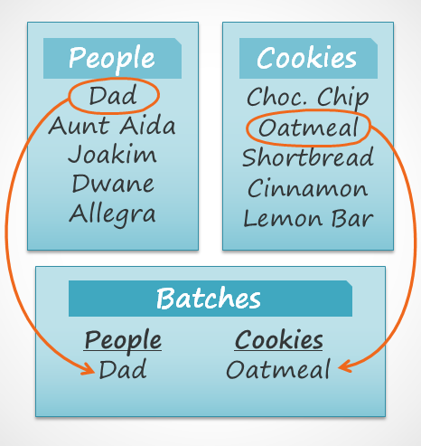
Lihat bagaimana daftar ketiga menggunakan kata-kata yang muncul di dua daftar pertama? Basis data mampu memahami bahwa kue Dad dan Oatmeal dalam daftar Batch adalah hal yang sama dengan kue Dad dan Oatmeal dalam dua daftar pertama. Hubungan ini tampak jelas, dan seseorang akan langsung memahaminya; namun, buku kerja Excel tidak.
Excel akan memperlakukan semua hal ini sebagai bagian informasi yang berbeda dan tidak terkait. Di Excel, Anda harus memasukkan setiap informasi tentang seseorang atau tipe cookie setiap kali Anda menyebutkannya karena database tersebut tidak akan bersifat relasional seperti database Access. Sederhananya, database relasional dapat mengenali apa yang dapat dilakukan manusia: Jika kata-kata yang sama muncul dalam beberapa daftar, mereka merujuk pada hal yang sama.
Fakta bahwa database relasional dapat menangani informasi dengan cara ini memungkinkan Anda untuk memasukkan, mencari, dan menganalisis data di lebih dari satu tabel pada satu waktu. Semua hal ini akan sulit dilakukan di Excel, tetapi di Access bahkan tugas yang rumit pun dapat disederhanakan dan dibuat cukup ramah pengguna.
Tentang tutorial Access
Apa yang diharapkan dari tutorial ini
Tutorial ini tidak akan mengajarkan Anda bagaimana membangun database dari awal. Ini dirancang untuk orang-orang yang berencana menggunakan database yang sudah ada sebelumnya, kemungkinan besar di tempat kerja.
Tutorial dimulai dengan pengenalan dasar untuk Access. Anda akan terbiasa dengan struktur database Access dan mempelajari cara menavigasi berbagai jendela dan objek yang ada di dalamnya. Seiring berjalannya tutorial, Anda akan mempelajari cara memasukkan informasi dalam beberapa cara. Anda juga akan mempelajari cara mengurutkan, mengambil, dan menganalisis informasi ini dengan menjalankan kueri. Setelah Anda memahami cara menggunakan database, Anda akan diperkenalkan dengan alat yang memungkinkan Anda mengubah struktur dan tampilannya.
Pada saat Anda selesai membaca tutorial ini, Anda akan dapat menggunakan database dengan percaya diri. Anda juga harus dapat mengubahnya agar sesuai dengan kebutuhan Anda.
Apakah tutorial ini tepat untuk Anda?
Jika Anda telah membaca deskripsi dan yakin bahwa tutorial ini sesuai dengan kebutuhan Anda, lanjutkan dan lompat. Seperti disebutkan di atas, tutorial ini terutama dirancang untuk mengajari orang cara menggunakan database yang ada. Tetapi apa pun tujuan akhir Anda, itu dapat memberi Anda dasar yang kuat.
Jika Anda berencana membuat sistem untuk melacak informasi pribadi, pertimbangkan apakah Anda memerlukan fungsionalitas penuh Access di database Anda. Meskipun Access adalah alat yang sangat berguna, menyiapkan database baru bisa jadi sulit dan memakan waktu. Jika Anda tidak memerlukan konektivitas penuh dari database relasional, pertimbangkan untuk mengelola informasi Anda dengan Excel. Jika Anda memutuskan untuk membuat database Anda sendiri, tinjau pelajaran kami tentang Merancang Database Anda Sendiri untuk sumber daya tentang pembuatan database.
Pelajaran 2: Pengenalan Objek
pengantar
Database di Access terdiri dari empat objek: tabel, kueri, formulir, dan laporan. Bersama-sama, objek-objek ini memungkinkan Anda untuk memasukkan, menyimpan, menganalisis, dan mengkompilasi data sesuai keinginan Anda.
Dalam pelajaran ini, Anda akan belajar tentang masing-masing dari empat objek dan memahami bagaimana mereka berinteraksi satu sama lain untuk membuat database relasional yang berfungsi penuh.
Tonton video di bawah ini untuk mempelajari selengkapnya tentang objek di Access.
Tabel
Pada titik ini, Anda seharusnya sudah memahami bahwa database adalah kumpulan data yang diatur ke dalam beberapa daftar yang terhubung. Di Access, semua data disimpan dalam tabel, yang berarti tabel adalah jantung dari database apa pun.
Anda juga mungkin sudah tahu bahwa tabel disusun menjadi kolom vertikal dan baris horizontal.
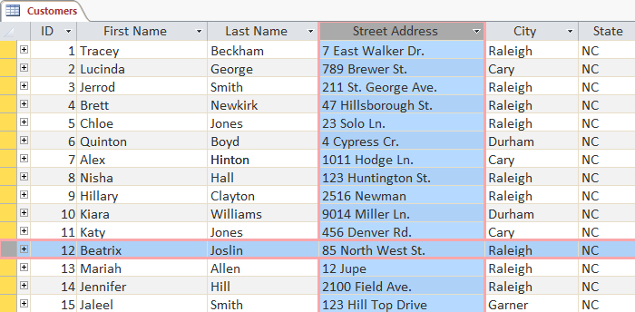
Di Access, baris dan kolom disebut sebagai nbsp; catatan dan bidang. Sebuah lapangan adalah lebih dari sekedar sebuah kolom; ini adalah cara mengatur informasi berdasarkan jenis datanya. Setiap bagian dari informasi dalam bidang adalah dari jenis yang sama. Misalnya, setiap entri di bidang yang disebut Nama Depan akan menjadi nama, dan setiap entri di bidang yang disebut Alamat Jalan akan menjadi alamat.
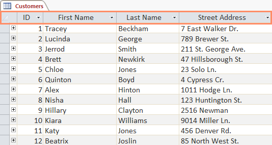
Demikian juga, catatan lebih dari sekadar baris; itu adalah unit informasi. Setiap sel dalam baris tertentu adalah bagian dari catatan baris itu.

Perhatikan bagaimana setiap record mencakup beberapa bidang. Meskipun informasi dalam setiap record diatur ke dalam field, informasi tersebut termasuk dalam informasi lain dalam record tersebut. Lihat nomor di sebelah kiri setiap baris? Ini adalah nomor ID yang mengidentifikasi setiap catatan. Nomor ID untuk catatan mengacu pada setiap informasi yang terkandung pada baris itu.
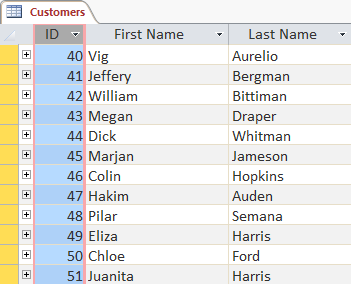
Tabel baik untuk menyimpan informasi yang berkaitan erat. Katakanlah Anda memiliki toko roti dan memiliki database yang menyertakan tabel dengan nama dan informasi pelanggan Anda, seperti nomor telepon, alamat rumah, dan alamat email mereka. Karena semua informasi ini adalah detail tentang pelanggan Anda, Anda akan memasukkan semuanya ke dalam tabel yang sama. Setiap pelanggan akan diwakili oleh catatan unik, dan setiap jenis informasi tentang pelanggan ini akan disimpan di bidangnya sendiri. Jika Anda memutuskan untuk menambahkan informasi lagi—misalnya, ulang tahun pelanggan—Anda cukup membuat bidang baru di dalam tabel yang sama.
Formulir, kueri, dan laporan
Meskipun tabel menyimpan semua data Anda, tiga objek lainnya— formulir, kueri, dan laporan —memberi Anda cara untuk bekerja dengannya. Masing-masing objek ini berinteraksi dengan rekaman yang disimpan dalam tabel database Anda.
Formulir
Formulir digunakan untuk memasukkan, mengubah, dan melihat catatan. Anda mungkin harus mengisi formulir di banyak kesempatan, seperti ketika mengunjungi kantor dokter, melamar pekerjaan, atau mendaftar sekolah. Alasan mengapa formulir sering digunakan adalah karena formulir tersebut merupakan cara mudah untuk memandu orang memasukkan data dengan benar. Saat Anda memasukkan informasi ke dalam formulir di Access, data berjalan persis di tempat yang diinginkan desainer database: ke dalam satu atau beberapa tabel terkait.

Formulir memudahkan memasukkan data. Bekerja dengan tabel yang luas dapat membingungkan, dan ketika Anda memiliki tabel yang terhubung, Anda mungkin perlu bekerja dengan lebih dari satu tabel sekaligus untuk memasukkan satu set data. Namun, dengan formulir, Anda dapat memasukkan data ke beberapa tabel sekaligus, semuanya di satu tempat. Perancang basis data bahkan dapat menetapkan batasan pada komponen formulir individual untuk memastikan semua data yang diperlukan dimasukkan dalam format yang benar. Secara keseluruhan, formulir membantu menjaga data tetap konsisten dan terorganisir, yang penting untuk database yang akurat dan kuat.
Pertanyaan
Query adalah cara untuk mencari dan mengkompilasi data dari satu atau lebih tabel. Menjalankan kueri seperti mengajukan pertanyaan mendetail tentang database Anda. Saat Anda membuat kueri di Access, Anda menentukan kondisi pencarian tertentu untuk menemukan data yang Anda inginkan.
Kueri jauh lebih kuat daripada penelusuran sederhana yang mungkin Anda lakukan di dalam tabel. Meskipun penelusuran dapat membantu Anda menemukan nama satu pelanggan di bisnis Anda, Anda dapat menjalankan kueri untuk menemukan nama dan nomor telepon setiap pelanggan yang telah melakukan pembelian dalam seminggu terakhir. Kueri yang dirancang dengan baik dapat memberikan informasi yang mungkin tidak dapat Anda temukan hanya dengan melihat data di tabel Anda.
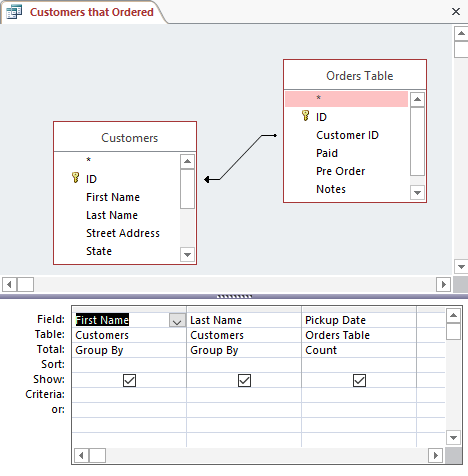
Laporan
Laporan menawarkan Anda kemampuan untuk menyajikan data Anda dalam bentuk cetak. Jika Anda pernah menerima cetakan komputer dari jadwal kelas atau faktur pembelian yang dicetak, Anda telah melihat laporan database. Laporan berguna karena memungkinkan Anda menyajikan komponen database dalam format yang mudah dibaca. Anda bahkan dapat menyesuaikan tampilan laporan agar menarik secara visual. Access menawarkan Anda kemampuan untuk membuat laporan dari tabel atau kueri apa pun.
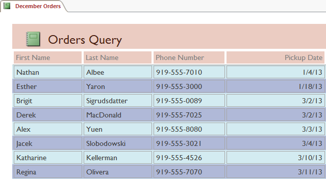
Menyatukan semuanya
Bahkan jika Anda memiliki gagasan yang baik tentang bagaimana setiap objek dapat digunakan, pada awalnya mungkin sulit untuk memahami bagaimana mereka semua bekerja bersama. Ini membantu untuk mengingat bahwa mereka semua bekerja dengan data yang sama. Setiap bagian data yang digunakan kueri, formulir, atau laporan disimpan di salah satu tabel database Anda.

Formulir memungkinkan Anda untuk menambahkan data ke tabel dan melihat data yang sudah ada. Laporan menyajikan data dari tabel dan juga dari kueri, yang kemudian mencari dan menganalisis data dalam tabel yang sama ini.
Hubungan ini terdengar rumit, tetapi sebenarnya mereka bekerja sama dengan sangat baik dan alami sehingga kita sering tidak menyadarinya saat kita menggunakan objek database yang terhubung. Pernahkah Anda menggunakan katalog kartu elektronik untuk mencari buku di perpustakaan? Kemungkinannya adalah, Anda memasukkan pencarian Anda ke dalam sesuatu yang terlihat seperti ini:
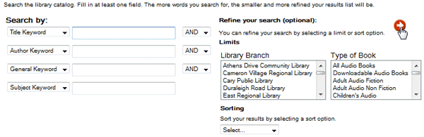
Saat melakukan penelusuran, Anda memasukkan istilah penelusuran ke dalam formulir yang kemudian membuat dan menjalankan kueri berdasarkan permintaan Anda. Saat kueri selesai menelusuri tabel database untuk catatan yang cocok dengan penelusuran Anda, Anda diperlihatkan laporan yang mengambil informasi dari kueri dan tabel terkait—dalam hal ini, daftar buku yang cocok dengan istilah penelusuran Anda. Anda dapat merepresentasikan hubungan antara objek seperti ini:

Katakanlah alih-alih menggunakan alat ini, Anda harus mencari di dalam tabel raksasa yang berisi setiap buku di sistem perpustakaan. Catatan yang relevan kemungkinan akan tersebar di banyak tabel: tabel untuk judul dan deskripsi buku, tabel yang berisi informasi tentang buku mana yang diperiksa masuk atau keluar, dan tabel dengan setiap cabang perpustakaan, hanya untuk beberapa nama.
Anda harus mencari setidaknya tiga meja hanya untuk menemukan sebuah buku, mempelajari lokasinya, dan melihat apakah buku itu sudah check-in! Sangat mudah untuk membayangkan betapa sulitnya menemukan buku yang tepat. Jika Anda tidak berhati-hati, Anda bahkan mungkin mengacaukan sesuatu dengan menghapus atau mengedit rekaman secara tidak sengaja. Sangat mudah untuk melihat bagaimana objek database membuat pencarian ini jauh lebih mudah dikelola.
Dalam pelajaran Pengenalan Basis Data kami, kami membahas konsep basis data relasional, yang merupakan basis data yang mampu memahami bagaimana kumpulan data yang berbeda berhubungan satu sama lain. Situasi seperti contoh di atas adalah alasan mengapa orang menganggap database relasional sangat berguna. Tanpa database relasional, apa yang seharusnya menjadi tugas sederhana—mencari sebuah buku dan melihat apakah buku tersebut telah didaftarkan dan di mana—menjadi sangat rumit dan memakan waktu. Mengetahui cara menggunakan empat objek Access dapat membuat tugas yang rumit menjadi lebih ramah pengguna.
Setiap kali Anda mempelajari program baru, penting untuk membiasakan diri dengan jendela program dan alat-alat di dalamnya. Bekerja dengan Access tidak berbeda. Mengetahui jalan Anda di sekitar lingkungan Access akan membuat belajar dan menggunakan Access lebih mudah.
Dalam pelajaran ini, Anda akan membiasakan diri dengan lingkungan Access, termasuk Ribbon, Backstage view, Navigation pane, dan Document Tabs bar. Anda juga akan mempelajari cara menavigasi dengan formulir navigasi jika database Anda menyertakannya.
Sepanjang tutorial ini, kita akan menggunakan database sampel. Jika Anda ingin mengikuti, Anda harus mengunduh database sampel Access kami. Anda harus menginstal Access di komputer Anda untuk membuka contoh.
Mengenal Access
Access menggunakan Ribbon untuk mengatur perintah. Jika Anda baru menggunakan Access atau memiliki lebih banyak pengalaman dengan versi yang lebih lama, Anda harus meluangkan waktu terlebih dahulu untuk terbiasa dengan antarmuka Access.

Document Tabs Bar
Semua objek yang terbuka ditampilkan dalam tab pada bilah Tab Dokumen . Untuk melihat objek, klik tabnya.
Bekerja di lingkungan Access
Access menggunakan fitur seperti Ribbon dan Quick Access Toolbar —tempat Anda akan menemukan perintah untuk melakukan tugas umum di Access—serta tampilan Backstage.
Ribbon
Access menggunakan sistem ribbon tab alih-alih menu tradisional. Ribbon berisi beberapa tab, masing-masing dengan beberapa kelompok perintah. Misalnya, grup Clipboard pada tab Beranda berisi perintah Potong, Salin, dan Tempel.

Beberapa grup juga memiliki panah kecil di sudut kanan bawah yang dapat Anda klik untuk opsi lainnya.

Untuk meminimalkan dan memaksimalkan Ribbon:
Ribbon dirancang untuk menanggapi tugas Anda saat ini; namun, Anda dapat memilih untuk meminimalkan Ribbon jika ternyata terlalu banyak memakan ruang layar.
-
Klik panah di sudut kanan bawah Ribbon untuk meminimalkannya.

-
Ribbon akan diminimalkan. Klik tab untuk membuat Ribbon muncul kembali. Ini akan hilang lagi saat tidak digunakan.

-
Untuk memaksimalkan Ribbon, klik tab, lalu klik ikon pin di pojok kanan bawah. Ribbon akan muncul setiap saat.

Tell Me
Menggunakan fitur Tell Me
Jika Anda kesulitan menemukan perintah yang Anda inginkan, fitur Tell Me dapat membantu. Ini berfungsi seperti bilah pencarian biasa: Ketik apa yang Anda cari, dan daftar opsi akan muncul. Anda kemudian dapat menggunakan perintah langsung dari menu tanpa harus menemukannya di Ribbon.
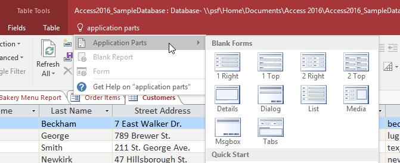
Quick Access Toolbar
Quick Access Toolbar, terletak di atas Ribbon, memungkinkan Anda mengakses perintah umum yang tidak peduli tab Anda berada. Secara default, ini menunjukkan perintah Save, Undo, dan Redo. Jika mau, Anda dapat menyesuaikannya dengan menambahkan perintah tambahan.
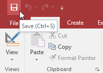
Perhatikan bahwa perintah Save hanya menyimpan objek terbuka saat ini. Selain itu, perintah Undo tidak akan membatalkan tindakan tertentu, seperti menambahkan record. Perhatikan baik-baik informasi Anda saat menggunakan perintah Undo untuk memastikannya memiliki efek yang diinginkan.
Backstage view
Tampilan Backstage memberi Anda berbagai opsi untuk menyimpan, membuka, dan mencetak database Anda.
Untuk mengakses tampilan Backstage:
-
Klik tab File pada Ribbon.

- Backstage view akan muncul.
 |
Klik tombol di interaktif di bawah ini untuk mempelajari lebih lanjut tentang menggunakan tampilan Backstage. |

InfoInfo panel akan muncul setiap kali Anda mengakses tampilan Backstage. Ini berisi informasi tentang database saat ini dan alat untuk membantu Anda memadatkan, memperbaiki, dan mengenkripsi database. |
Panel Navigasi
The panel Navigasi adalah daftar yang berisi setiap objek dalam database Anda. Untuk melihat lebih mudah, objek diatur ke dalam kelompok berdasarkan jenis. Anda dapat membuka, mengganti nama, dan menghapus objek menggunakan panel Navigasi.
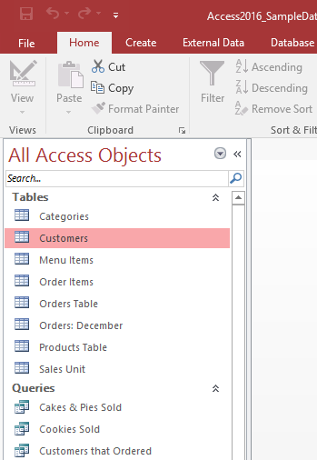
Untuk meminimalkan dan memaksimalkan panel Navigasi:
Panel Navigasi dirancang untuk membantu Anda mengelola semua objek Anda; namun, jika Anda merasa itu memakan terlalu banyak ruang layar, Anda dapat meminimalkannya.
-
Untuk meminimalkan panel Navigasi, klik panah ganda di sudut kanan atas.

- Panel Navigasi akan diminimalkan. Klik panah ganda lagi untuk memaksimalkannya.
| Jika Anda ingin membuat panel Navigasi lebih kecil tanpa meminimalkan sepenuhnya, Anda dapat mengubah ukurannya. Cukup klik dan seret batas kanan panel Navigasi. Ketika itu adalah ukuran yang diinginkan, lepaskan mouse Anda. | |
 |
Menyortir objek di panel Navigasi
Secara default, objek diurutkan menurut tipe, dengan tabel dalam satu grup, formulir di grup lain, dan seterusnya. Namun, jika mau, Anda bisa mengurutkan objek di panel Navigasi ke dalam grup pilihan Anda. Ada empat opsi pengurutan:
- Kustom memungkinkan Anda membuat grup kustom untuk menyortir objek. Setelah menerapkan pengurutan, cukup seret objek yang diinginkan ke grup baru.
- Tipe Objek mengelompokkan objek menurut tipenya. Ini adalah pengaturan default.
- Tabel dan Tampilan Terkait mengelompokkan formulir, kueri, dan laporan dengan tabel yang dirujuk.
- Tanggal Dibuat atau Tanggal Modifikasi mengurutkan objek berdasarkan kapan objek tersebut dibuat atau terakhir diedit.
Untuk mengurutkan objek di panel Navigasi:
-
Klik panah drop-down di sebelah kanan All Access Objects, lalu pilih jenis yang diinginkan dari menu drop-down.

-
Objek di panel Navigasi sekarang akan diurutkan untuk mencerminkan pilihan Anda.

Untuk mengkustomisasi lebih lanjut tampilan panel Navigasi, Anda bisa meminimalkan grup objek yang tidak ingin Anda lihat. Cukup klik panah ganda ke atas di sebelah nama grup. Untuk menampilkan grup, klik panah ganda ke bawah.
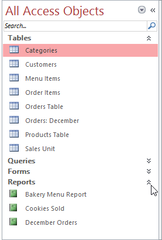
Basis data dengan formulir navigasi
Beberapa database menyertakan formulir navigasi yang terbuka secara otomatis saat database dibuka. Bentuk navigasi dirancang untuk menjadi user-friendly penggantian panel navigasi. Mereka berisi tab yang memungkinkan Anda untuk melihat dan bekerja dengan formulir, kueri, dan laporan umum. Memiliki objek yang sering digunakan tersedia untuk Anda di satu tempat memungkinkan Anda mengaksesnya dengan cepat dan mudah.
Untuk membuka objek dari formulir navigasi, klik tabnya. Objek akan ditampilkan dalah5 formulir navigasi. Setelah sebuah objek terbuka, Anda dapat bekerja dengannya seperti biasa. Pada contoh di bawah, formulir navigasi memiliki tab di dekat kiri atas untuk pesanan, pelanggan, dan item menu, dan masing-masing akan membuka objek yang sesuai.

Umumnya, formulir navigasi hanya menyertakan objek yang dibutuhkan pengguna biasa untuk bekerja dengan cukup teratur, itulah sebabnya formulir navigasi Anda mungkin tidak menyertakan setiap formulir, kueri, atau laporan. Ini membuatnya lebih mudah untuk menavigasi database. Dengan menyembunyikan tabel dan formulir, kueri, dan laporan yang jarang digunakan, ini juga mengurangi kemungkinan database dirusak oleh pengguna yang secara tidak sengaja mengedit atau menghapus data yang diperlukan.
Untuk alasan ini, penting untuk bertanya kepada desainer atau administrator database Andh5 sebelum bekerja dengan objek yang tidak tersedia di formulir navigasi Anda. Setelah Anda memiliki persetujuan, Anda dapat memaksimalkan yang panel Navigasi dan membuka objek dari sana.
Latihan!
- Buka database latihan kami.
- Klik semua tab, dan perhatikan bagaimana opsi pada Ribbon berubah.
- Minimalkan Ribbon, lalu Maksimalkan lagi.
- Ubah ukuran panel Navigasi agar tidak memakan banyak ruang.
- Urutkan ulang objek di panel Navigasi.
Pelajaran 4: Mengelola Database dan Objek
pengantar
Setiap database Access terdiri dari beberapa objek yang memungkinkan Anda berinteraksi dengan data. Basis data dapat mencakup formulir untuk memasukkan data, kueri untuk mencari di dalamnya, laporan untuk menganalisisnya, dan tabel untuk menyimpannya. Setiap kali Anda bekerja dengan database Anda, Anda bekerja dengan banyak objek ini sekaligus. Untungnya, Access membuat pengelolaan objek ini cukup sederhana.
Dalam pelajaran ini, Anda akan belajar cara membuka dan menutup database, serta cara membuka, menutup, dan menyimpan objek.
Sepanjang tutorial ini, kita akan menggunakan database sampel. Jika Anda ingin mengikuti, Anda harus mengunduh database sampel Access kami. Anda harus menginstal Access di komputer Anda untuk membuka contoh.
Tonton video di bawah ini untuk mempelajari selengkapnya tentang mengelola database dan objek di Access.
Untuk membuka database yang ada:
Sebelum memasukkan data atau memodifikasi objek, Anda harus membuka database Anda.
- Pilih tab File untuk pergi ke tampilan Backstage.
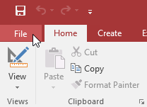
- Klik Buka.

- Klik Jelajahi.

- Kotak dialog Buka akan muncul. Cari dan pilih database, lalu klik Open.
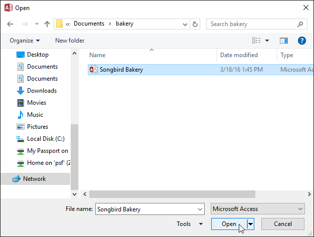
- Satu atau beberapa pesan peringatan mungkin muncul saat Anda membuka database Anda. Jika database berisi fungsi yang disesuaikan, bilah kuning dengan peringatan keamanan mungkin muncul di bawah Ribbon. Jika Anda mempercayai sumber database Anda, klik Aktifkan Konten agar database Anda ditampilkan dengan benar.
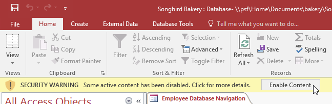
- Setelah mengaktifkan semua konten dalam database, Anda mungkin melihat pesan yang menanyakan apakah Anda ingin menjadikan database sebagai Dokumen Tepercaya. Klik Ya jika Anda ingin semua konten diaktifkan secara otomatis setiap kali Anda membuka database.

Anda mungkin juga diminta untuk masuk ke database. Pilih nama Anda dari daftar login. Jika nama Anda tidak muncul, klik Tambah Pengguna untuk memasukkan informasi Anda.
Untuk menutup database:
- Pilih tab File untuk pergi ke tampilan Backstage.
- Pilih Tutup.

- Jika Anda memiliki objek yang belum disimpan, kotak dialog akan muncul untuk setiap objek yang menanyakan apakah Anda ingin menyimpannya. Pilih Ya untuk menyimpan objek, Tidak untuk menutupnya tanpa menyimpan, atau Batal untuk membiarkan database Anda terbuka.

Bekerja dengan objek
Akan sangat membantu jika Anda menganggap database Anda sebagai folder atau map besar tempat data Anda disimpan. Data itu sendiri terkandung dalam objek database. Access memperlakukan setiap objek ini sebagai dokumen terpisah, yang berarti Anda harus membuka dan menyimpannya satu per satu agar dapat bekerja dengannya.
Anda mungkin telah memperhatikan bahwa pelajaran ini tidak berisi instruksi untuk menyimpan database. Ini karena Anda tidak dapat menyimpan seluruh database sekaligus. Sebagai gantinya, Anda harus menyimpan objek yang ada di dalam database satu per satu.
Untuk membuka objek:
- Di panel Navigasi, temukan dan klik dua kali objek yang diinginkan.

- Objek akan muncul sebagai tab di bilah Tab Dokumen.

Secara default, objek yang paling baru dibuka akan muncul di jendela utama sebagai objek saat ini. Untuk melihat objek lain yang terbuka, klik tabnya di bilah Tab Dokumen.
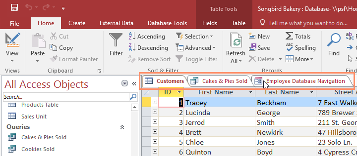
Menyimpan objek
Anda harus menyimpan perubahan apa pun yang Anda buat pada setiap objek sebelum menutup database Anda. Ingat, menabung lebih awal dan sering dapat mencegah pekerjaan Anda hilang. Namun, Anda juga akan diminta untuk menyimpan pekerjaan yang belum disimpan ketika Anda mencoba untuk menutup database Anda.
Untuk menyimpan objek baru:
- Pilih objek yang ingin Anda simpan dengan mengklik tabnya di bilah Tab Dokumen.
- Klik perintah Save pada Quick Access Toolbar, atau tekan Ctrl+S pada keyboard Anda.
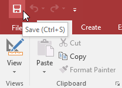
- Saat pertama kali Anda menyimpan objek, Anda akan diminta untuk menamainya. Masukkan nama objek yang diinginkan, lalu klik OK.
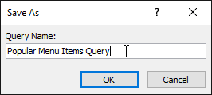
- Objek akan disimpan. Klik perintah Save lagi untuk menyimpan perubahan apa pun pada objek.
Untuk menutup objek:
- Pilih objek yang ingin Anda tutup, lalu klik X di sebelah kanan bilah Tab Dokumen.

- Jika ada perubahan yang belum disimpan pada objek, Anda akan diminta untuk menyimpannya. Pilih Ya untuk menyimpan, Tidak untuk menutupnya tanpa menyimpan perubahan Anda, dan Batal untuk membiarkan objek terbuka.
Anda juga dapat menutup objek dengan mengklik kanan tabnya pada bilah Tab Dokumen dan memilih Tutup. Pilih Tutup Semua untuk menutup semua objek yang terbuka.
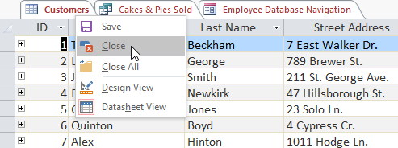
Untuk mengganti nama objek:
- Jika objek yang ingin Anda ganti namanya terbuka, tutup.
- Di panel Navigasi, klik kanan objek yang diinginkan, lalu pilih Ganti Nama.
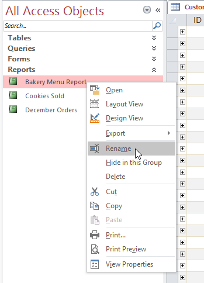
- Ketik nama objek baru, lalu tekan Enter pada keyboard Anda.
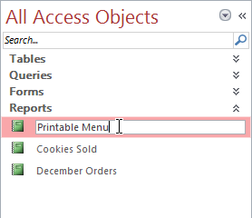
Latihan!
- Buka database latihan kami.
- Buka sebuah objek.
- Tutup objek.
- Ganti nama objek.
- Tutup database tanpa menyimpan perubahan Anda.